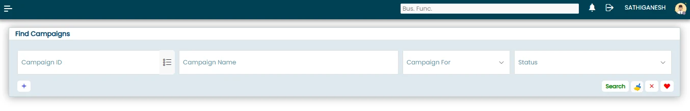
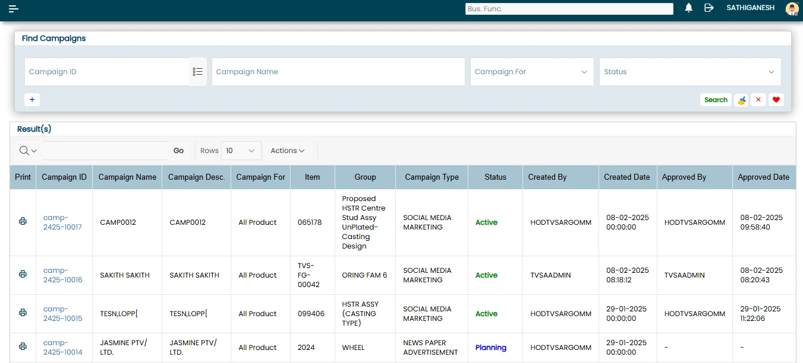
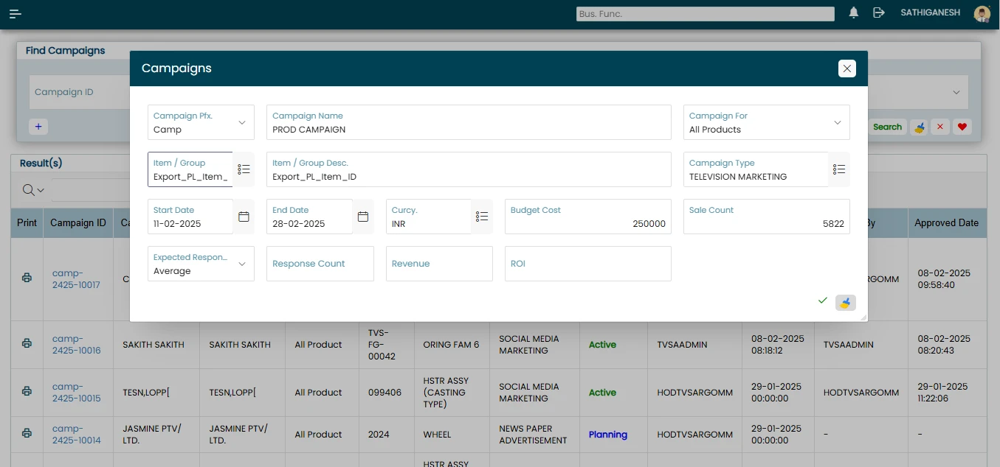
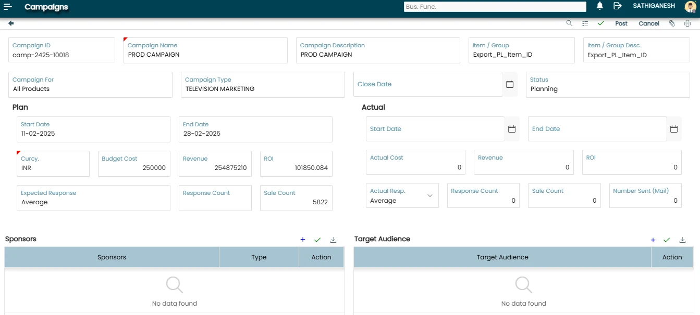
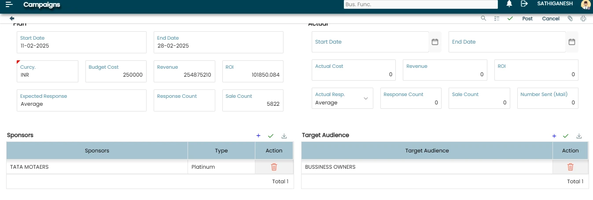
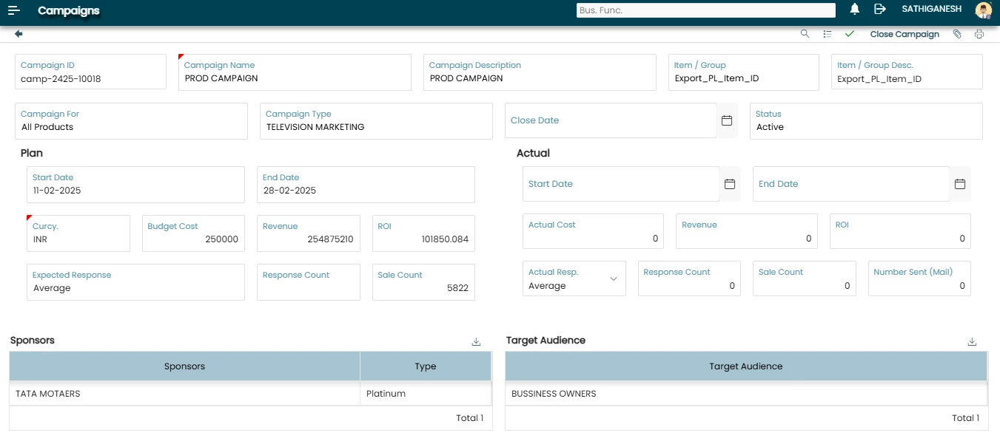

<div data-category="CRM" data-title="Campaigns" data-updated="December 01, 2025" data-contributors="RoadmapIT" data-breadcrumb="Home,CRM,Campaigns">
  <div class="page-content">
    <p>A campaign is a well-organized marketing effort designed to meet particular business goals, such as attracting potential customers, boosting sales, or enhancing brand visibilityCampaigns are all created in this screen.</p>
    <h5>Navigation path:</h5>
    <p class="fs-6">CRM \ Transaction \ Campaigns</p>
    
    <ul style="list-style-type: none; align-content: center">
      <li class="mouse-icon">Search screen displays the list of Campaigns with the relevant details and its status</li>
      <li class="mouse-icon">Click on Search to filter all the records</li>
    </ul>
    
    <ul style="list-style-type: none; align-content: center">
      <li class="mouse-icon">User can filter the respective documents by entering the search parameters at the header</li>
      <li class="mouse-icon">On clicking search button, system displays the results relevant to the search parameters entered</li>
      <li class="mouse-icon">Using  icon, entered search parameters can be cleared</li>
      <li class="mouse-icon">To close the screen, use <i class="bi bi-x fs-4 mx-2 text-danger"></i> icon</li>
      <li class="mouse-icon">By Clicking the <i class="bi bi-plus fs-4 mx-2 text-primary"></i> Add button we can create new Campaign. The campaign details given are populated to the transaction screen once executed</li>
    </ul>
    
    <ul style="list-style-type: none; align-content: center">
      <li class="mouse-icon">Choose theCampaign Prefix from LOV</li>
      <li class="mouse-icon">Add the Campaigns Name</li>
      <li class="mouse-icon">Select the campaigns for All Product/Service or Specific group/Item</li>
      <li class="mouse-icon">Select the Item from LOV</li>
      <li class="mouse-icon">Choose the Campaign Type</li>
      <li class="mouse-icon">Enter the Start Date & End Date</li>
      <li class="mouse-icon">Choose Currency & Add Expected/Budget Details</li>
      <li class="mouse-icon">Enter the Sales Count & Respond Count </li>
      <li class="mouse-icon">Enter the Revenue</li>
      <li class="mouse-icon">ROI value updated automatically</li>
      <li class="mouse-icon">Click on <i class="bi bi-check-lg fs-4 mx-1 text-success"></i> to create the new Campaign record</li>
    </ul>
    
    <ul style="list-style-type: none; align-content: center">
      <li class="mouse-icon">Campaigns created with the details given</li>
      <li class="mouse-icon">Enter the Plan Start Date and Plan End Date  of the campaign</li>
      <li class="mouse-icon">Select the Currency and Budget Cost</li>
      <li class="mouse-icon">Enter the Plan Sale Count and Select the Expected Response</li>
      <li class="mouse-icon">Enter the Response Count</li>
      <li class="mouse-icon">Enter the Plan Revenue, ROI will be auto calculated</li>
      <li class="mouse-icon">Enter the Actual Sale Count and Select the Expected Response</li>
      <li class="mouse-icon">Enter the Response Count</li>
      <li class="mouse-icon">Enter the Actual Revenue, ROI will be auto calculated</li>
      <li class="mouse-icon">To cancel a document, click the "Cancel" button</li>
      <li class="mouse-icon">To run the report, click the Print button</li>
      <li class="mouse-icon">Close campaign button is enabled only when the campaign is active. The campaign must have Actual start and end date, Actual budget details, and close date to close the campaign</li>
    </ul>
    
    <ul style="list-style-type: none; align-content: center">
      <li class="mouse-icon">Click on <i class="bi bi-plus fs-4 mx-2 text-primary"></i> button  on Sponsors</li>
      <li class="mouse-icon">Add the Sponsor from LOV and select the Type</li>
      <li class="mouse-icon">Using the <i class="bi bi-x fs-4 mx-2 text-danger"></i> icon, Delete the line in new status</li>
      <li class="mouse-icon">Click on <i class="bi bi-check-lg fs-4 mx-1 text-success"></i> to Save</li>
      <li class="mouse-icon">Click on <i class="bi bi-plus fs-4 mx-2 text-primary"></i> button  on Target Audience</li>
      <li class="mouse-icon">Add the Target Audience with LOV</li>
      <li class="mouse-icon">Click on <i class="bi bi-check-lg fs-4 mx-1 text-success"></i> to Save</li>
      <li class="mouse-icon">Select the cancel button to cancel document</li>
      <li class="mouse-icon">Click on Post button to active the campaigns</li>
    </ul>
    
    <ul style="list-style-type: none; align-content: center">
      <li class="mouse-icon">Click Close button for Active to close the Campaign</li>
    </ul>
  </div>
</div>